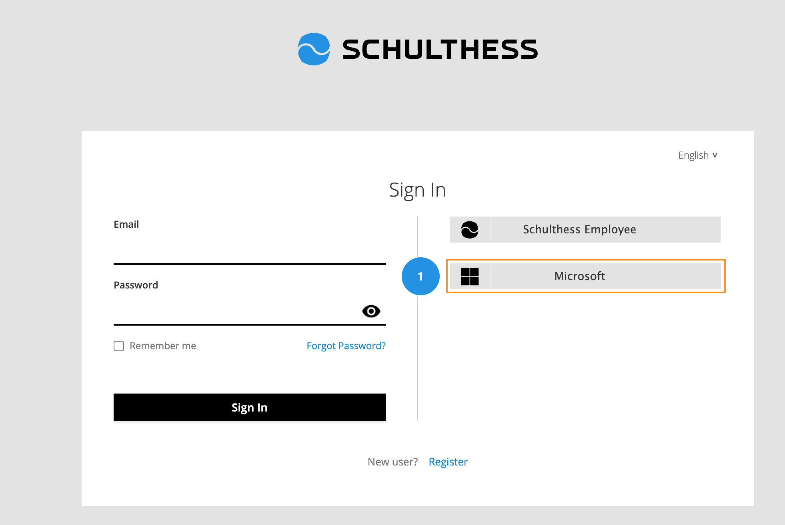

How to 🔐 Sign In to schulthess?
You can Sign In to the Schulthess web application by using:
- Manual Sign In by using your active Email and password.
- Schulthess Employee to access your account by Schulthess Employee portal.
- Microsoft by using your Microsoft account.
1️⃣ How to Sign In by Email & Password?
You can Sign In by following these simple steps.
- Enter your registered Email.
- Type your Password related to your account.
- Click on the "Sign In" button to sign in to your account.
Forgot Password
You can reset your password if you forgot it.
Remember Me
You can save your login details for the future login.

2️⃣ How to Sign In by Schulthess Employee?
You can Sing In by using the Schulthess Employee active directory by following these simple steps.
-
Click on the "Schulthess Employee" option from the Sign In page.
-
You will navigate to the schulthess employee portal.
- Enter your Email for your account.
- Click on the "Next" button to add your password.
- Type your Password related to your account.
- Click on the "Sign In" button to sign in to your account.


Forgot Password
You can reset your password if you forgot it.
Sign In Options
You can Sign In with Security Key or GitHub account
3️⃣ How to Sign In by Microsoft?
You can Sign In by using the Microsoft account by following these simple steps.
-
Click on the "Microsoft" option from the Sign In page.
-
You will navigate to the microsoft sign in portal.
- Enter your Email for your account.
- Click on the "Next" button to add your password.
- Type your Password related to your account.
- Click on the "Sign In" button to sign in to your account.


Forgot Password
You can reset your password if you forgot it.
Sign In Options
You can Sign In with Security Key, GitHub, or Organization account